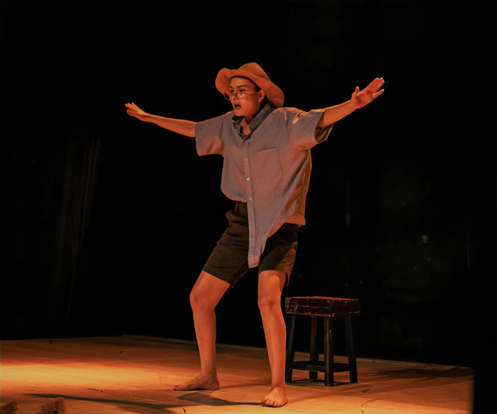
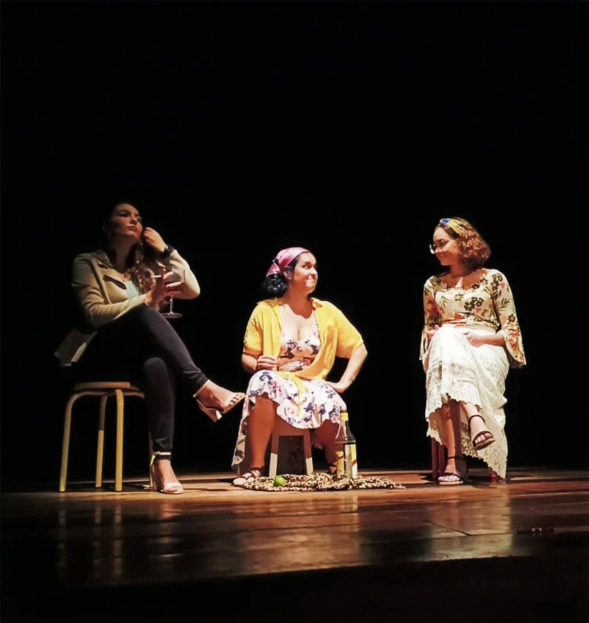
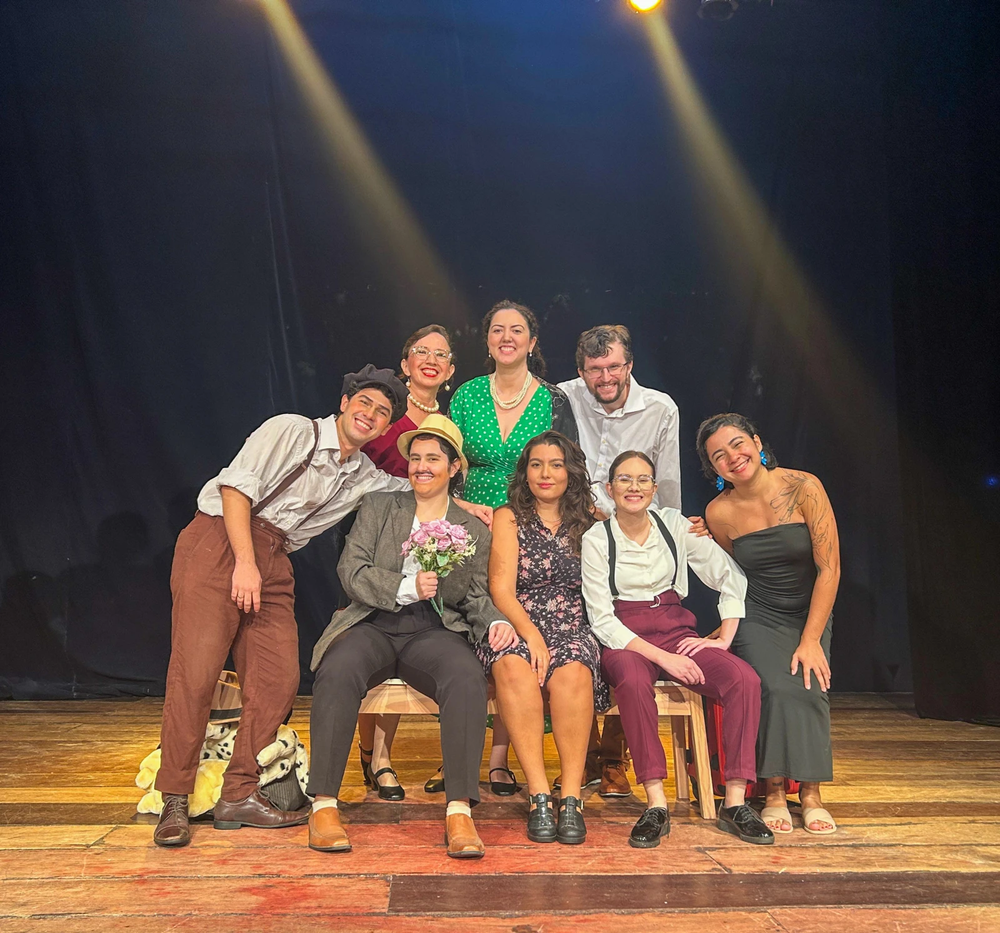
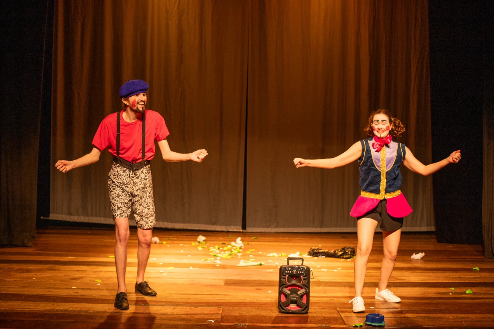
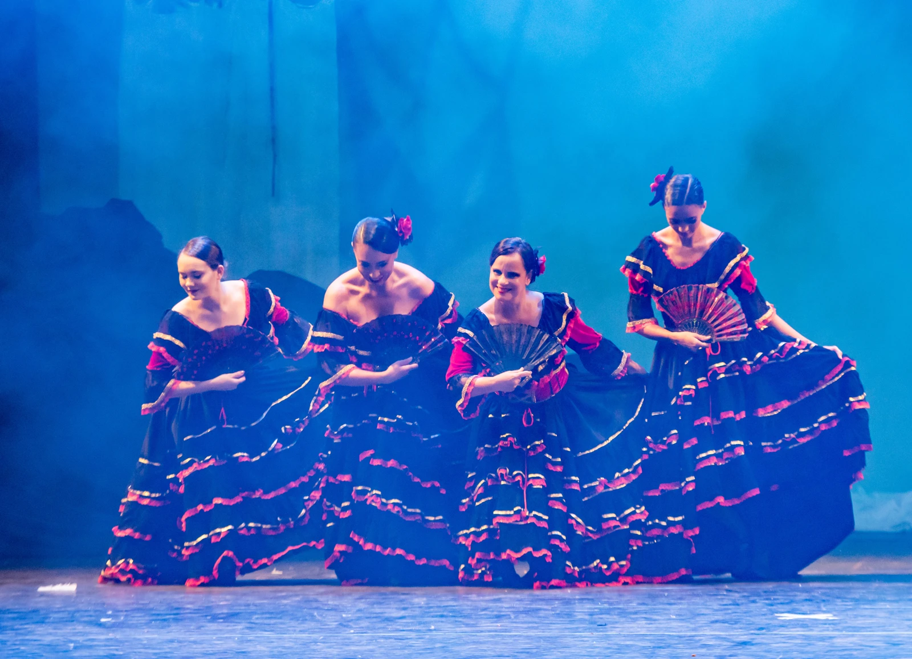
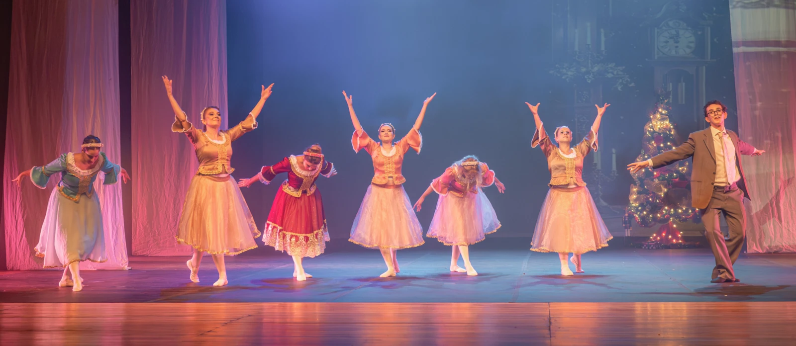
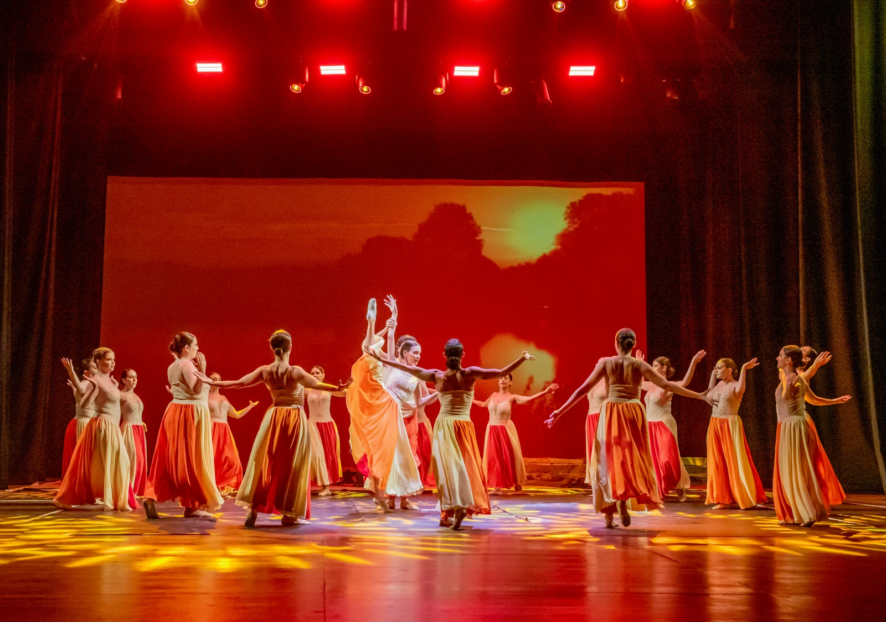

Xandú e seus causos
Xandú Quaresma | Theatre | 2022
SELECTED PROJECTS
Selected work in theatre, dance and performance.

Xandú Quaresma | Theatre | 2022

Neighbor & Father | Theatre | 2023

Eusébio & Benvinda | Theatre | 2023–2024

Clown | Theatre | 2024

Spanish Dance | Ballet | 2024

Party Guest & Spanish Dance | Ballet | 2025–2026

Ballet Ensemble | Ballet | 2023